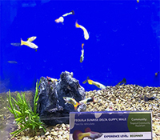
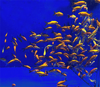

Platinum Male Betta Fish
With their long flowing tails and vibrant colors, it's no wonder that bettas are one of the most popular fish for beginner aquarists. They are easy to care for and make a great ornamental addition to any desk, kid's room or living space. While female bettas are not as aggressive and can sometimes live together peacefully, male bettas are aggressive toward each other. Therefore, house only one male with smaller, peaceful fish in a community aquarium, or keep him alone.

Sunburst Orange Tetra
These fish are not injected or dyed. They breed and reproduce naturally with this fluorescent color. These Tetras look great under either regular daylight bulbs or under an actinic bulb. One of the hardier Tetras, this peaceful fish prefers to school and will do fine in well-lit aquariums. While requiring some swimming space, This fish will also appreciate cover along the perimeter of the aquarium.